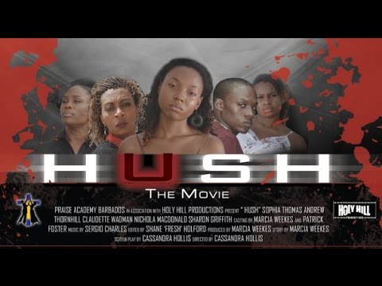
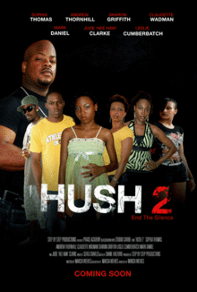
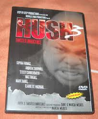

| Hush 1 | Hush 2 | Hush 3 | Payday |
|---|---|---|---|
|  In Hush, you will be gripped by an all too real story, one which will keep you riveted to your seat as scene after scene brings to life the drama of young love. You will be challenged to extract for yourself a message which will compel you to pick a side...no sitting on the fence. |
 It is in these tough times when Mikisha needs help that she meets her very wealthy dad, Morris (Mark Daniel) and her sister Claire, (Lesley Cumberbatch). Could this reunion between Mikisha and her dad be the answer to all her financial needs or is this her worst nightmare? Will finding another side of her family give her all the love she has been searching for? |
 Set on the beautiful paradise island of Barbados, these two innocent, young girls, Mikisha and Claire have experienced everything in life but paradise. Raped and physically abused by their drug dealing father Morris, Mikisha, who is pregnant at the age of 15 and Claire motherless and brokenhearted since the age of 10, are both at the brink of emotional disaster, it's no wonder that horrible nightmares of abuse and past failures seek to hide true love and happiness from Mikisha and her son, Joshua. |
Payday, a Barbadian comedy-drama/buddy film showcasing a raw slice of Barbadian community life. Romie, an aspiring mechanic and ladies man, with his brutally honest best friend Pack, invest their entire salaries in a down-payment on a garage. |